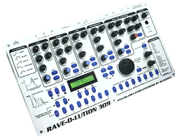
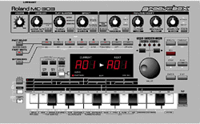
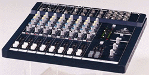

Grâce aux revenus que m'ont procuré mes logiciels, j'ai pu investir notamment dans du matériel Techno. Je vous en donne la liste ainsi que leurs critiques, afin que vous soyez informé si jamais vous êtes intéressé par ce même matériel:
Quasimidi Rave-o-lution 309

La Rave-o-lution 309, produite par Quasimidi est une boîte à rythmes polyphonique, complétée par une ligne de basse monophonique.
La section rythmique est divisée en quatre parties (Kick, Snare, HiHat et Percussion), sur chacune desquelles s'appliquent tous les réglages afin de créer un son unique: Instrument, Tune, Attack, Delay, Accent, Level, CutOff, Resonance... Pour chaque partie, on dispose de 64 emplacements de sauvegarde des sons.
La section synthétiseur émule une ligne de basse analogique type TB-303. Plusieurs oscillateurs sont disponibles: sine, square, triangle, sawtooth, distorted sine, distorted triangle... avec bien entendu un enveloppe et LFO. De même que pour les instruments rythmiques, on dispose de nombreux réglages que l'on peut sauvegarder dans l'une des 127 mémoires réservées aux sons de basse.
Pour chaque partie, on peut enregistrer jusqu'à 99 "motifs" (c.à.d. des phrases) de longueur variable. Les ensembles motifs + sons sont sauvegardés dans des "patterns" (jusqu'à 99) et des suites de patterns peuvent être programmées dans des "songs" (jusqu'à 16). des Le séquenceur fonctionne en mode "step-programming" (type TR-808 / TB-303) ou alors en enregistrement temps réel.
La Rave-o-lution est complètement intégrée dans un environnement MIDI, puisque tous les paramètres, notamment ceux commandés par les potentiomètres, sont émis en temps réel, mais peuvent être également reçus. Vous disposez d'ailleurs d'une piste séquenceur spéciale ("mastertrack", une par song) pour enregistrer les commandes MIDI (tous les mouvements des potentiomètres par exmemple), qui seront restituées lors de la lecture de la song.
En plus, la Rave-o-lution dispose de trois processeurs d'effets avec de nombreux réglages: un de reverb, un de chorus / delay / flanger et un égaliseur deux bandes paramétrique.
- La qualité incroyable des sons
- Les nombreux potientiomètres
- Les possibilités illimitées
- Les cartes d'extensions
- Le manuel, largement incomplet
- Quelques bogs dans l'OS.
- Pas de copier / coller des motifs (sauf dans la version 2 de l'OS)
- Pas assez d'oscillateurs (à mois d'acheter l'extension)
Roland GrooveBox MC-303

La GrooveBox MC-303, produite par Roland est une mini-workstation avec boîte à rythmes, synthétiseur, arpégiateur, séquenceur, processeurs d'effets...
La section rythmique fonctionne en mode "step-programming" ou en enregistrement temps réel et dispose de plusieurs banques de sons: TR-808, TR-909, House, Jungle... A part le volume, les réglages (par exemple le cutoff) s'appliquent globalement sur tous les sons de la banque et non pas sur un instrument.
La section synthétiseur comporte 7 pistes. Vous avez le choix parmi un nombre impressionnant de sons échantillonnés sur lesquels vous pouvez appliquer des réglages de volume, panoramique, cut-off, résonnance, enveloppe, LFO... Vous disposez aussi d'un arpégiateur assez complet, mais inextensible. A signaler également, 8 pistes sont réservées au RPS, qui consiste à jouer en utilisant le clavier des phrases extraites de patterns (ROM ou user) par-dessus la pattern courante et en sychro.
Vous pouvez sauvegarder de nombreuses patterns dans différentes banques et les agencer en "song"(jusqu'à 16).
En plus, vous avez deux processeurs d'effets réglables: un de reverb, un de chorus / delay / flanger.
- Le prix
- Le manuel très détaillé
- Le son "très dance" + le fun lors de l'utilisation
- Les très nombreux sons
- La gestion catastrophique des potentiomètres
- Le bruit de fond de certains samples
- L'intégration MIDI trés limitée: la plupart des commandes ne sont pas émises
- La mémoire beaucoup trop petite
Behringer MX-1602

La MX-1602 est une table de mixage 2 bus, 4 voies stéréo, 4 voies mono fabriqué par Behringer.
Vous disposez d'entrées au format Jack 6.5 ou XLR sur chacune des pistes, d'une sortie générale et d'une sortie moniteur. On trouve également la préécoute assignable à la piste souhaitée. Chaque voie dispose de deux départs d'effets (dont un permutable en PFL) et d'un égaliseur deux bandes sur chaque voie.
La table propose également un retour pour l'enregistreur, qui vous permet de l'écouter sur la sortie moniteur, simplement en appuyant sur un bouton.
- La qualité sonore
- Le prix
- Le faible encombrement - elle est exceptionellement mince
- Les nombreuses entrées / sorties.
- Rien.
- Rien non plus.
- ...
- ...
Divers
Heu... des cables, une interface MIDI, un minidisc Sharp, une platine CD BST et un Mac G3.